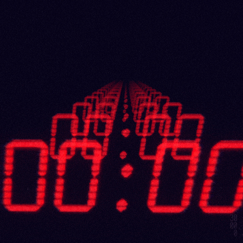

Lab 13 - Loops

Challenge
Experimented with JavaScript Loops
Problems
We didn't run into any siginificant problems
Reflection
The syntax of loops in JavaScript is quite similar to loops in Python.
This familiarity helped speed along the coding process. Although there's not many
situations where looping could be useful outside of art purposes we could think of,
we look forward to potentially using it for our group projects.
Results
ACTIVATE THE FIZZBUZZBOOM DEVICE!!!